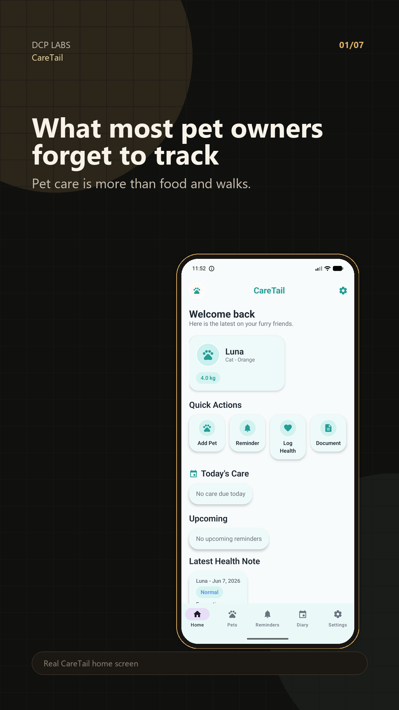
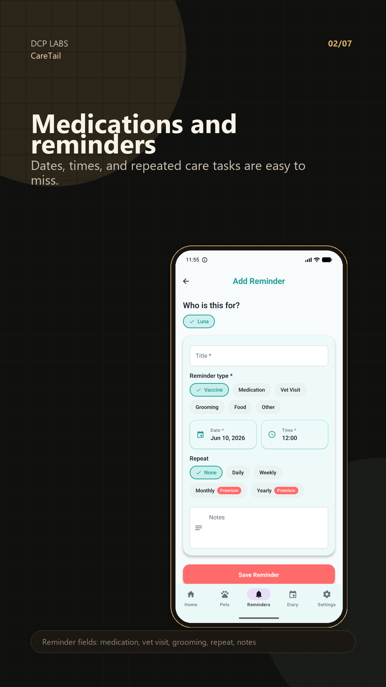
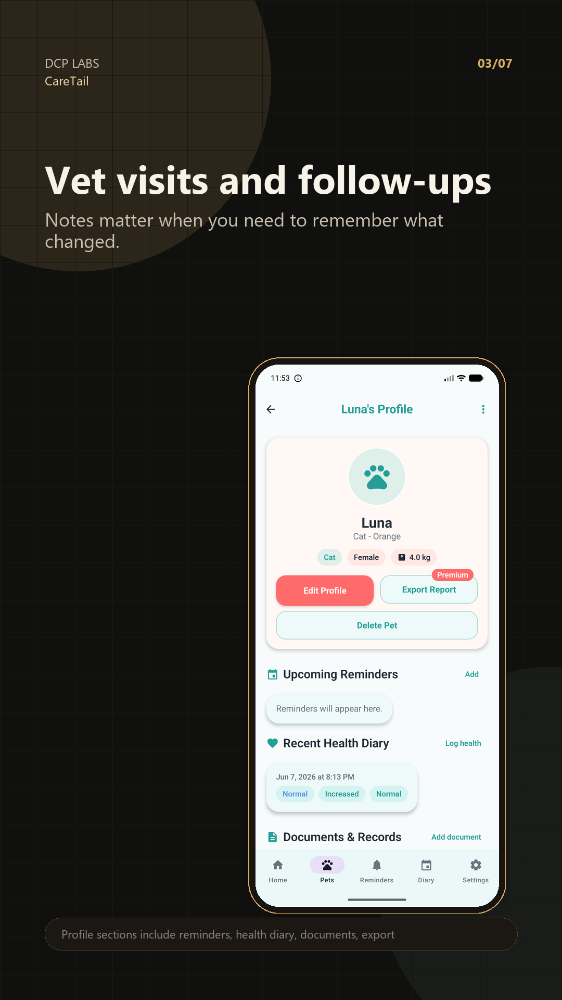
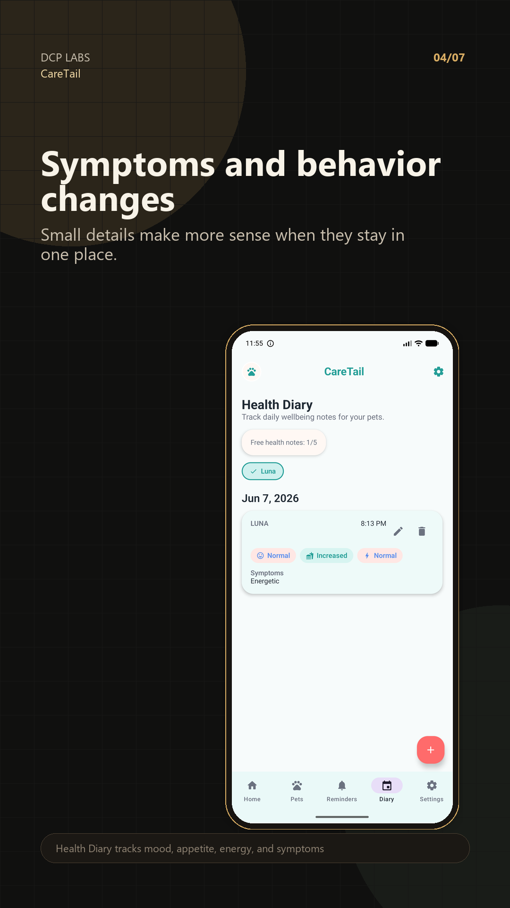
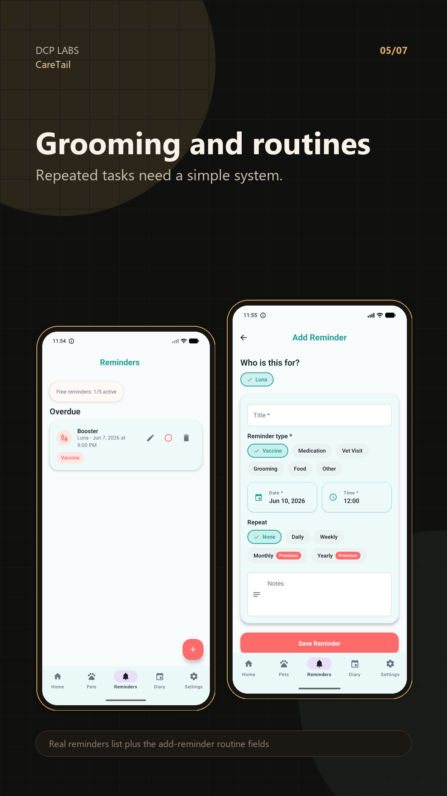
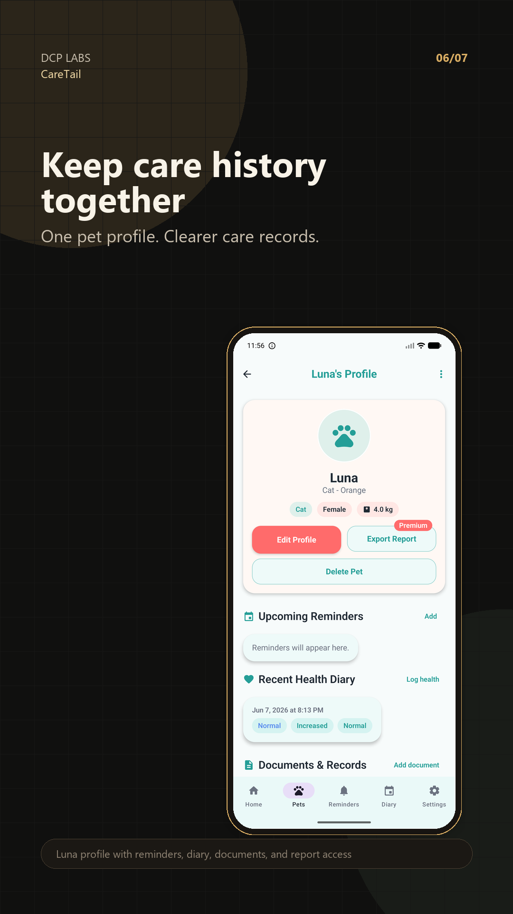
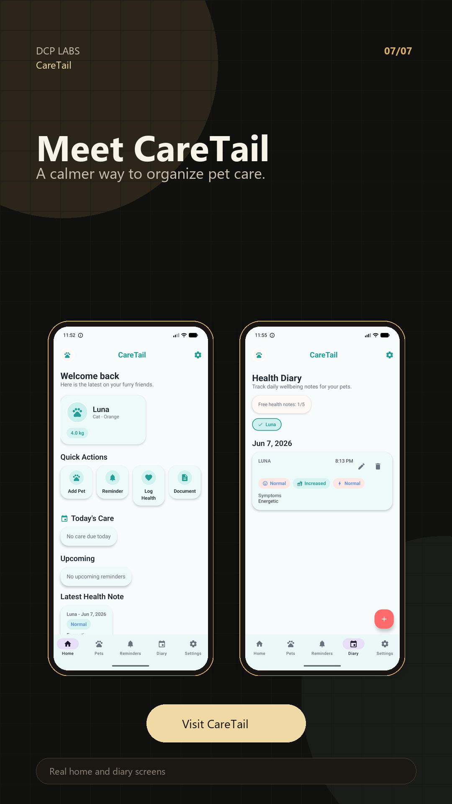

01/07 - Real CareTail home screenshot

02/07 - Real Add Reminder screenshot

03/07 - Real pet profile screenshot

04/07 - Real Health Diary screenshot

05/07 - Real reminders and add reminder screenshots

06/07 - Real profile history screenshot

07/07 - Real CareTail screenshots and CTA